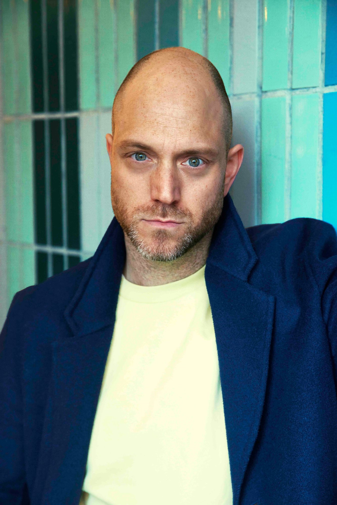
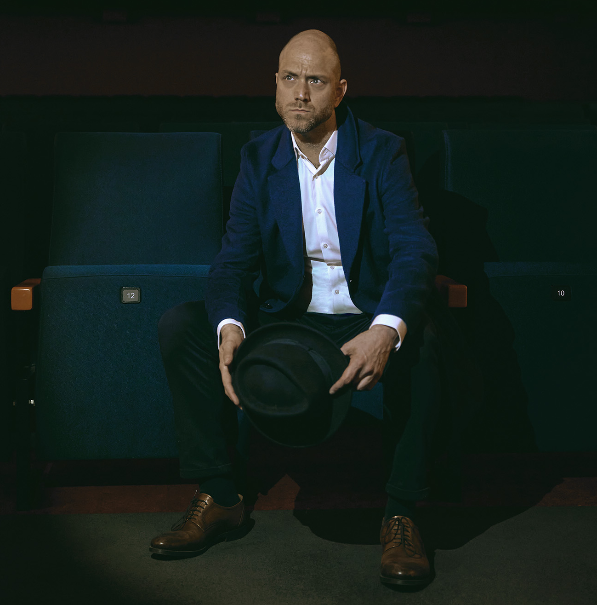

Your best people hold back. Decisions circle. The team performs instead of connects. This work surfaces why — and shifts it at the root.
Writing. Directing. Acting. Editing. Producing. Intimacy Coordination. Six disciplines from a craft where trust is built under pressure, with no second take.
A diagnostic system mapped to nine zones of organisational nervous-system architecture. Applied in live conversations, in real decisions, in the rooms where it matters.
Porges. Edmondson. Barsade. Keltner. Frankl. Brown. The research on why organisations default to survival — and the conditions for return.
Three things worth knowing before we begin.
It's never a people problem. It's one condition: an organisation running on survival architecture — the pattern your team learned to protect themselves with under pressure, and never switched off. It decides who speaks, who stays silent, what gets escalated, and what gets buried.
You see it in the hire who leaves at month four. In the feedback no one gives honestly. In the conversation after the meeting — the one that contradicts it. The nervous system decides safety or threat before anyone in the room is conscious of it.
That's the layer no restructure reaches. No software sees it. Because everyone accepts it.
"Most organisations perform the company they wish they were — not the one they actually are."Tom Waldek
Not aspirations. Measured shifts. What this looks like on your P&L.
Across EU organisations, stress-related absence alone averages roughly €3,000 per employee per year (derived from EU-OSHA). For a 500-person company, that's €1.5 million annually. Before counting stalled decisions, suppressed ideas, and departures no one saw coming. The survival architecture is on your P&L whether you measure it or not.
The decisions that were circling for weeks get made in one honest conversation. The hire who was about to leave stays — because someone finally asked the real question. The leadership table stops performing alignment — and starts making it real. Partners renew. Because decisions land faster and your team stopped performing every conversation.What Changes When The Pattern Lifts
The meeting starts and you notice it: you're not bracing. The room isn't performing. Someone says what they actually think — and no one flinches. You make the call you've been circling for weeks, and it lands. Not because you found the right strategy. Because you stopped leading from the pattern.
Leaders shaped by a story that no longer serves.
Organisations running patterns they've never examined.
Teams performing a version of themselves that everyone maintains and no one believes.
Not because something is broken. Because the gap between how your organisation performs and what your people are actually capable of has become too expensive to ignore.
The organisation doesn't copy the leader's strategy.
It copies the leader's nervous system.
Not a metaphor. Neurologically. Every unresolved story a leader carries becomes the operating system the team breathes. Keltner's research confirms what every room already knows: power without self-awareness erodes the empathy that built it.
Frankl saw it before anyone in business did: people don't default to survival because they're weak. They default because they've lost access to what matters — their own meaning. The role replaces the reason. Performance fills the void where purpose used to live. Every survival pattern in an organisation traces back to this one absence — a WHY that was never asked for, and a person who stopped believing it mattered. Performance. Control. Compliance. What looks like a leadership problem is a meaning problem. Restore access to the WHY, and the pattern has nothing left to run on.
The work starts there. Before strategy. Before method. At the WHY.
That survival architecture is hiding the most valuable thing in your organisation: the full capacity of your people. Everything no dashboard captures and no AI replicates — reading a room, making the real calls, being right. Not soft skill. The original technology. We play safe because once, it was the smartest thing we had. And we never stopped.
That capacity doesn't return on command. Survival is repetition — same seat, same response, same performance — and the nervous system keeps choosing it until something breaks the loop.
Not as art. As practice. A different opening question. A restructured agenda. A seat change at the leadership table — each micro-disruption signals to the nervous system: safety doesn't require sameness. Start small and you build the capacity for what matters: the brave conversation, the honest decision, the moment you lead from yourself — not from the role. The Human Origin doesn't teach creativity. It removes what blocks it.
The leader's nervous system is the organisation's first operating system. Not metaphorically. Neurologically.
When survival architecture is running the leader, it runs the room. Because everyone accepts it. It starts being the atmosphere — the unspoken agreement about what can and cannot be said, decided, or risked.
Control replaces connection. Performance replaces presence.
The nervous system scans for safety or threat before any conscious thought (Porges, polyvagal theory). Emotional contagion transfers a leader's affective state to the team within milliseconds, below conscious awareness (Barsade, 2002). Power systematically erodes the empathy that built leadership once leadership is secured (Keltner, 2016).
Most leadership work addresses what people consciously reflect on, or what they're taught. It reaches the layer of decisions people can name, behaviours they can describe, and intentions they can defend.
The patterns this work surfaces run beneath that layer — in the leader's nervous system, in real meetings, in the decisions already in motion before anyone chooses them. That's the room this work enters. That's where it happens.
Each discipline is applied where your organisation actually operates — in real meetings, real decisions, real conversations. In the room where it matters.
A director doesn't tell actors what to feel. A director creates conditions where truth shows up. The Human Origin works the same way — regulate the nervous system, structural and personal, surface the survival narrative hiding behind reputation and performance, and watch what your teams are actually capable of.
The methodology is not six disciplines applied independently. It is six disciplines applied to nine zones of organisational nervous-system architecture. Each zone anchored in peer-reviewed research. Each discipline operating in a specific engagement phase. This is the map.
When the diagnostic runs, this is the map being populated. When Origin Work begins, the highest-cost zones are addressed first — measured against decision speed, turnover, and partner trust.
Nothing hidden. The price on the page is the price on the invoice. No expanded scope. No retroactive surcharges.
Investment: €12,000 for the diagnostic. €40,000 for the full engagement. ROI benchmark: EU-OSHA data shows stress-related absence alone costs €3,000 per employee per year — €1.5M annually for a 500-person company.
No data stored. The result is yours alone — an honest mirror of what's running underneath.
Or take it as a standalone page — thehumanorigin.org/en/pulse-check

I spent 25 years in film. The same feedback followed me across every set, every country, every room: too much. Too emotional. That's not how it works here. In every one of those rooms, I watched talented people working at a fraction of what they actually were — because the space to be that didn't exist.
Behind every role is a person who learned to manage themselves into something acceptable. Creative intelligence — buried. Emotional depth — managed away. Not weakness. Adaptation to systems that reward performance over presence and call it professionalism.
The people who stopped performing — even briefly — created what no system had predicted. I've been one of them. Making that capacity visible is my mission. Making it permanent is this work.
No. It's something different at a structural level. This is a diagnostic and re-architecture of the survival patterns your organisation runs on without knowing it — surfaced and changed inside your real meetings and your real decisions, not separated out into parallel sessions. The methodology comes from film, where trust is built under pressure with no second take.
Leadership development adds skills to the person. This work removes the survival patterns running them. Survival architecture is the hidden operating system most leadership programmes politely work around. The Human Origin makes it visible and addresses it at the source — the leader's nervous system. The nervous system, not the behaviour. Outcomes that show up in turnover, decision speed, and partner retention.
Performing and thriving are not the same. Most organisations that look healthy on the numbers are running survival architecture underneath — the capacity already in the building, held back by patterns no one has named. The question isn't whether you're performing. It's how much decision speed, honest escalation, and initiative you're losing to a pattern that looks like professionalism but functions as self-protection.
A leader willing to examine what they've been performing. A team ready to say what's true. Calendar time: 45 minutes for the Entry Conversation, 3–4 weeks for the Trust Architecture Diagnostic, 3–5 months for Origin Work if you choose that far. The work happens in your real meetings and your real decisions — where the survival patterns are already running.
Entry Conversation: 45 minutes. Trust Architecture Diagnostic: 3–4 weeks. Origin Work (optional): 3–5 months. Integration runs concurrently with the final weeks of Origin Work. Review: 6 months after completion. Total elapsed time for the full arc: 6–9 months. The diagnostic stands alone if that's all you want.
The decisions that were circling for weeks get made in one honest conversation. The hire who was about to leave stays, because someone finally asked the real question. The leadership table stops performing alignment and starts building it. Partners renew because decisions come faster and the team they work with stopped hedging every commitment. Measured against turnover cost, decision velocity, and partner retention.
Because leadership development works on what leaders do. This work addresses what runs them. Most programmes assume the leader is the one who needs upgrading. This one starts with the leader's nervous system as the organisation's operating system — Porges, Edmondson, Keltner, Frankl. The science is current. The programmes you've tried probably aren't.
Yes. Every conversation in every phase. Observation notes, diagnostic findings, and the full Trust Architecture Map are delivered to you alone. Nothing is shared internally or externally without your explicit written consent. The work surfaces things people haven't said aloud before — confidentiality is the condition that makes that possible.
Transparent and on this page. Entry Conversation: no fee. Trust Architecture Diagnostic: €12,000. Origin Work: €40,000, including Integration and Review. Diagnostic Debrief (optional, standalone): €2,500 fixed. Retained Advisory (ongoing, after Origin Work): €3,000–5,000 per month. No hidden costs, no expanded scopes mid-engagement.
The methodology is grounded in peer-reviewed research: Porges (Polyvagal Theory), Edmondson (Psychological Safety), Barsade (Emotional Contagion), Keltner (Power Paradox), Frankl (Logotherapy). The film-discipline application is new and proprietary. Case evidence is shared under NDA in the Entry Conversation — not in marketing material. Specifically: documented engagements with measurable outcomes in turnover, decision speed, and partner retention.
Yes. German and English, across Europe. The Human Origin is based in Europe with an EN/DE bilingual practice. Engagements typically run in the language of the leadership team. All materials, diagnostics, and integration work are available in both languages.
Leaders who say what's true instead of what's safe. Teams that surface problems before they become crises. Partners who stay because working with you feels different.
A Trust Architecture Diagnostic.